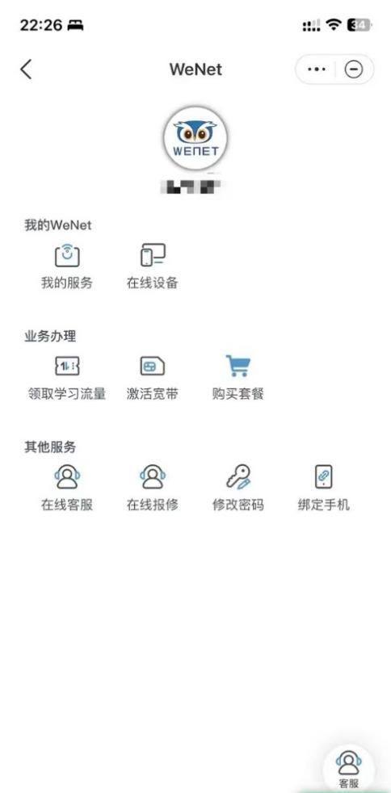
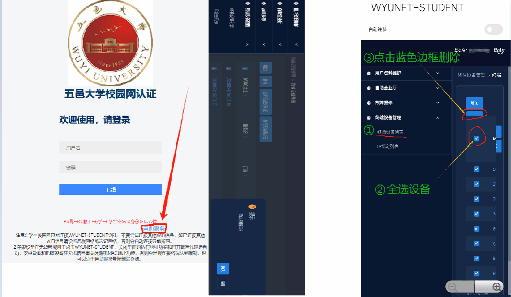

WeNet 这几年从"能连就行"到"把宿舍网折腾明白"的迭代之路
从早期的单一认证工具到如今覆盖四端、自带故障诊断的完整入网方案，我在跟着 WeNet 一路升级的这几年里，看到了一个校园网客户端团队死磕"把连接这件小事做扎实"的执念。
现在这版 WeNet 是什么样
先看当下。如果你刚入学、刚拿到新手机、或者刚刚从安卓换到 Mac，打开 WeNet 的那一刻你会发现——它已经不是当年那个只弹出一个账号密码框就完事的小程序了。
现在的 WeNet 覆盖了 Windows、macOS、Android、iOS 四个平台——去它的官网能看到全平台下载入口和功能清单。手机端有前台认证、后台保活、通知提醒；桌面端能一键配置 PPPoE 和有线网；甚至连故障排查都做成了内置流程，断网时它会依次检查后台是否被杀、WiFi 信号格数、省电策略、随机 MAC 地址这几个高频嫌疑点，逐条给你出结论。
这个状态放在今天看理所当然。但我记得刚接触 WeNet 的时候，它还只是一个"能连上就行"的简单认证器——连上了算运气好，连不上就打开浏览器手动找 Portal 页面，或者去宿舍楼下找网络中心的师傅。
从哪起步：一个最小可行的认证器
样本文档里没有提到 WeNet 的早期版本号和具体的迭代时间线，但从它今天的文档结构和功能模块反推，起步阶段的 WeNet 应该只做了一件事：把 Portal 认证这件事自动化。
在它之前，校园网的使用体验大致是这样的：连上宿舍 WiFi → 打开浏览器访问任意网址 → 被重定向到学校的 Portal 页面 → 输入学号和密码 → 等页面跳转到"认证成功"。这个流程里任何一步出问题都够你喝一壶——Portal 页面弹不出来、密码输错三次被锁、认证完了息屏一会儿又掉。
WeNet 的第一代做的事情很朴素：把"自动弹 Portal → 代你填账号密码 → 监听认证状态"这三步打包成了一个常驻应用。对用户来说，变化就是"从每次手动刷页面到打开 App 点一下认证"。
从样本文档里的账号类型一节可以看出，这个阶段团队只支持了最常见的"学号 + 初始密码"这一种模式。手机号直登和运营商宽带号都是后来加上的。能连上，是那个阶段唯一的验收标准。
关键转折：从"能连"到"不断"
如果说第一代 WeNet 解决的是"连不上"的问题，那么真正让它变得好用的转折点，是团队开始盯着"连上之后又断"这件事死磕。
频繁断网的排查清单现在有五条——后台被杀、WiFi 信号弱、省电策略、认证服务器波动、安全扫描干扰。但我敢打赌，早期版本里"后台被杀"这一条大概率排在更靠后的位置，甚至可能根本没有。因为让应用常驻后台这件事，在 iOS 上几乎是权限博弈、在安卓上是 ROM 厂商各搞一套的灰区，没有哪个开发者愿意主动跳进这个坑。
但团队跳进去了。他们在安卓端加了"加锁"引导、写了"电池优化白名单"的设置步骤、提醒用户关闭随机 MAC 地址；在 iOS 端专门做了"先认证再锁屏"的流程建议和"解锁后先关 App 再重连 WiFi"的应急方案。这些不是功能更新，而是对抗系统限制的说明书——用文档和引导补全系统 API 不肯给的那部分可靠性。

这个阶段的 WeNet 从"认证器"变成了"连接守护者"。它不再只负责发起认证，而是开始主动维持心跳、监控连接状态、在断网时给你一条最快的恢复路径（关 WiFi → 等 3 秒 → 重开 → 点认证，10 秒搞定）。想系统了解它的进阶玩法和故障处理套路，去wenet文档里翻，写得比 App 内的帮助说明细得多。
多端铺开：把宿舍网的每个入口都占住
第三个阶段，我印象里是从 macOS 客户端开始的。
之前 Mac 用户连校园网是最痛苦的一群人——Windows 有原生 PPPoE 配置界面能凑合用，手机端有微信公众号能拿账号密码，但 Mac 上你得自己跑到系统设置里手动建 PPPoE 接口、输账号密码，Portal 认证还得靠 Safari 自动弹。
WeNet 做 macOS 客户端的切入点很聪明：它没有尝试替代系统的网络配置，而是做了一个引导器——去wenet下载拉 .dmg、拖进应用程序文件夹、处理 Gatekeeper 安全警告、然后告诉你"WiFi 自动走 Portal、有线网可以直接填 PPPoE 参数让我帮你连"。这比给 Mac 用户重写一个网络栈靠谱多了。
紧接着是移动端的权限细化：Android 需要逐项申请网络访问、WLAN 切换、位置信息、后台运行、存储访问；iOS 要检查位置服务总开关、蜂窝网络权限、通知开关。样本文档里的权限清单和 PC 端防火墙提示，就是这个阶段留下的产物——团队在逐个系统上摸清楚了"让 WeNet 正常工作到底需要用户同意什么"，然后把这些要求系统化地整理成了可参考的清单。

到这里，四端布局成型了。但团队好像还没打算停。
他们一直在死磕什么——以及什么一直不管
观察完这几个阶段的迭代轨迹，有两条规律特别清楚：
第一条，可靠性优先于功能丰富。 你看 WeNet 至今没有做"记住密码自动登录"的一键通，它仍然要求你输入账号密码——只是帮你省掉了手动打开 Portal 的步骤。它把精力花在了"连上之后不掉"而不是"连得更快"。故障排查模块、后台锁存引导、省电白名单设置，这些全是为可靠性服务的。
第二条，不碰用户数据。 账号密码可以本地保存、可以用手机号验证码重置，但它绝不主动上传任何认证日志之外的信息。样本文档里提到的存储访问权限，用途是"下载更新缓存、保存认证日志"——没有提到上传任何诊断数据。这在校园网场景下很重要，毕竟没人希望自己的上网行为被一个客户端记录下来。
那什么事情他们好像一直没管？UI 设计。 我印象里 WeNet 的界面从第一代到现在基本没怎么变——一个认证按钮、一个账号密码输入框、一个状态指示器，仅此而已。没有深色模式、没有主题色切换、没有个性化设置。它把"能连、稳连"做到极致，至于"好不好看"，大概从来不是他们的优先级。
下一步会走向哪——从迭代规律推的
从这个路线继续推，我觉得 WeNet 的下一步大概率会集中在两个方向：
一是智能化的故障自愈。 现在它能告诉你"后台被杀了，去加锁"，但这个动作你得自己去做。未来有没有可能它主动调起系统设置的加锁页面、或者在检测到电池优化影响心跳时弹出一条可点击的快捷入口？样本文档里已经出现了"一键重连技巧"，说明团队在往"用户少动手"的方向走。
二是场景化的认证配置。 不同高校的 Portal 页面长得不一样、PPPoE 参数不同、账号格式也五花八门。现在 WeNet 的文档是通用指引加少量例子，但如果它能识别当前连接的 SSID、自动匹配该学校的默认配置，那用户体验会再上一个台阶。当然，这需要大量学校侧的配合数据，短期内未必能落地。
这些都是从迭代规律推的，不当官方口径传。
写在最后
从一个最小可行的认证器到今天覆盖四端、自带故障诊断的入网方案，WeNet 的迭代史其实就是一句话的展开：把"连上网"这件每天都要做的小事，做扎实一点、再扎实一点。
如果你还没用上最新版本的 WeNet，或者在某个平台上找不到合适的安装包，不妨顺着文中的链接过去瞄一眼。这套资料我同步维护在三个仓库里，方便大家按需取用——GitHub适合主力查看，Gitee访问更稳定，GitCode作为国内镜像备份一份以防万一。